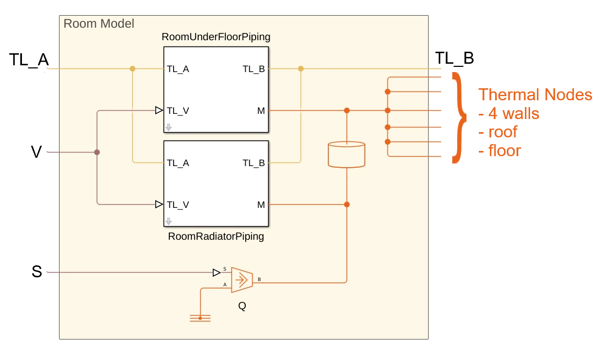

Room Modelling Options in Building Custom Component
This documentation information on different room modelling options available in the Building custom component.
Contents
To open the room custom component with radiator and under floor piping blocks, see Room Modelling.
Thermal Load
The room air is modelled as a thermal mass, connected to 4 walls, a roof, and a floor, all modeled as custom components. This fidelity is useful when evaluating impact of solar load on building with time.
Thermal Requirements
The room air is modelled as a thermal mass, connected to 4 walls, a roof, and a floor, all modeled as custom components. Additionally, you can add heat to the room through port S. The port S for all rooms are bundled together in the Building component and are an array of input nodes, of size i, j, where i specifies the number of apartments and j specifies the number of rooms per apartment in the building.
HVAC: Room Radiator Only
The room air is modelled as a thermal mass connected to walls, roof, floor, a radiator model, and a heat source S. The radiator model heats or cools the room and there is a thermal connection between them.
HVAC: Room Radiator with Underfloor Heating/Cooling
The room air is modelled as a thermal mass connected to walls, roof, floor, a radiator model, an under floor piping system, and a heat source S. The radiator and the under floor pipe models heat or cool the room. They are connected through a thermal domain.

HVAC: Room Underfloor Heating/Cooling Only
The room air is modelled as a thermal mass connected to walls, roof, floor, an under floor pipe layout, and a heat source S. The under floor pipe model heats or cools the room and there is a thermal connection between them.
To learn more about the wall, roof, and floor custom models, see Wall, Roof, and Floor Modelling. Roof is modelled as WallSolar, internal building walls and floor as Wall, and the building external walls as WallSolarWithWindowsAndVents.
The walls in a room may be internal-wall or and external-wall. All internal walls are modelled as Wall custom component. External walls can have variants. External walls with windows and vents is modelled as WallSolarWithWindowsAndVents.